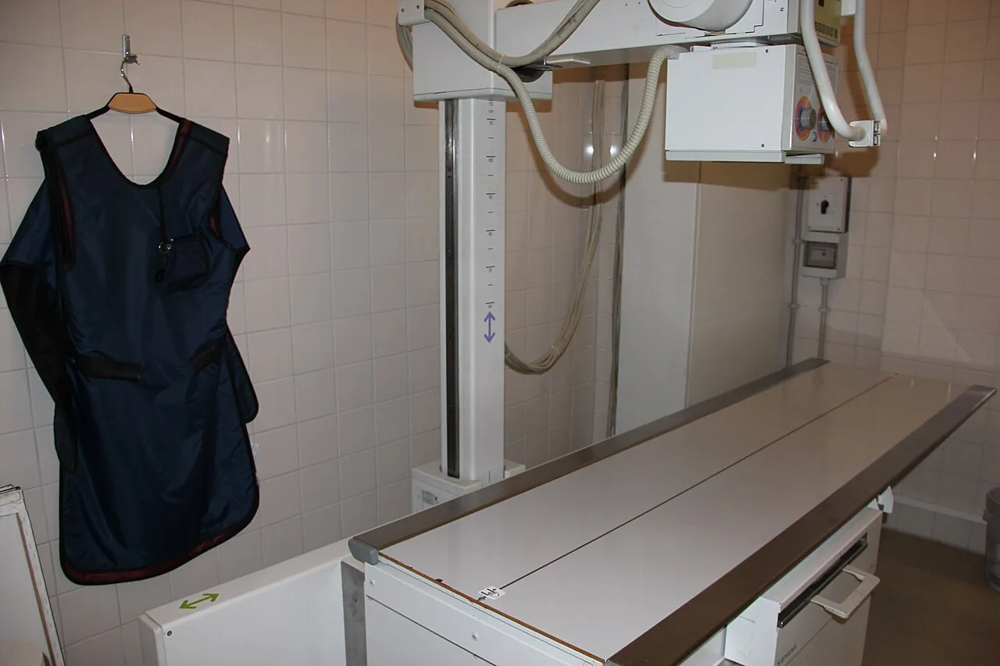
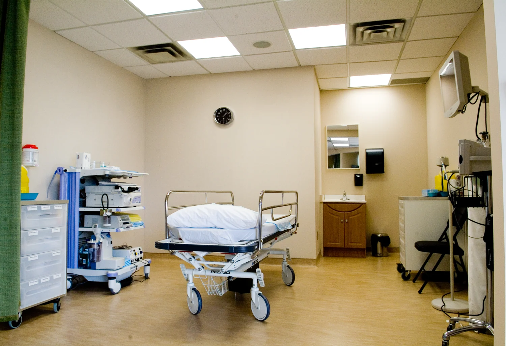
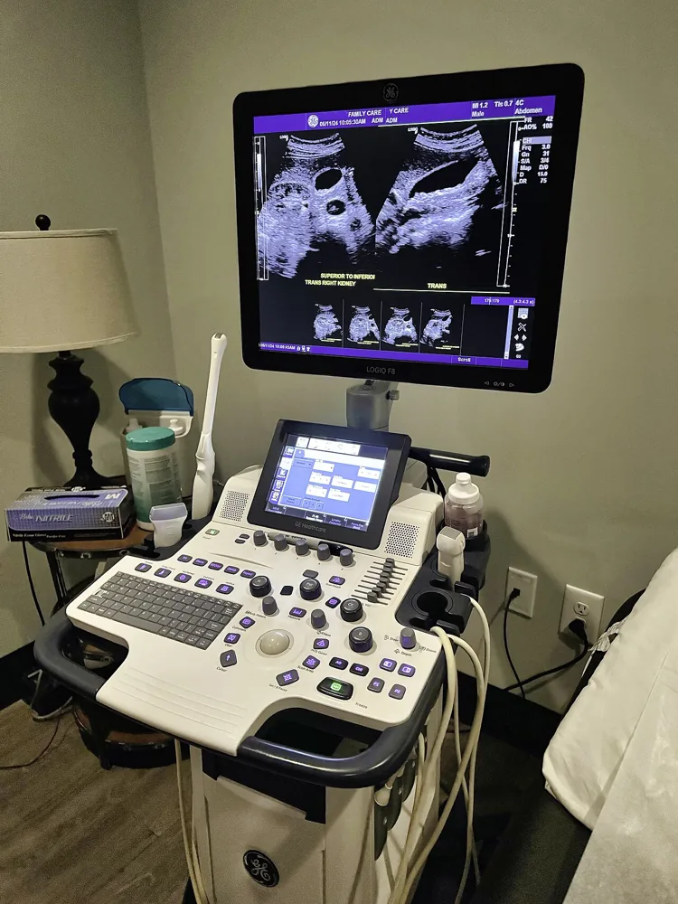
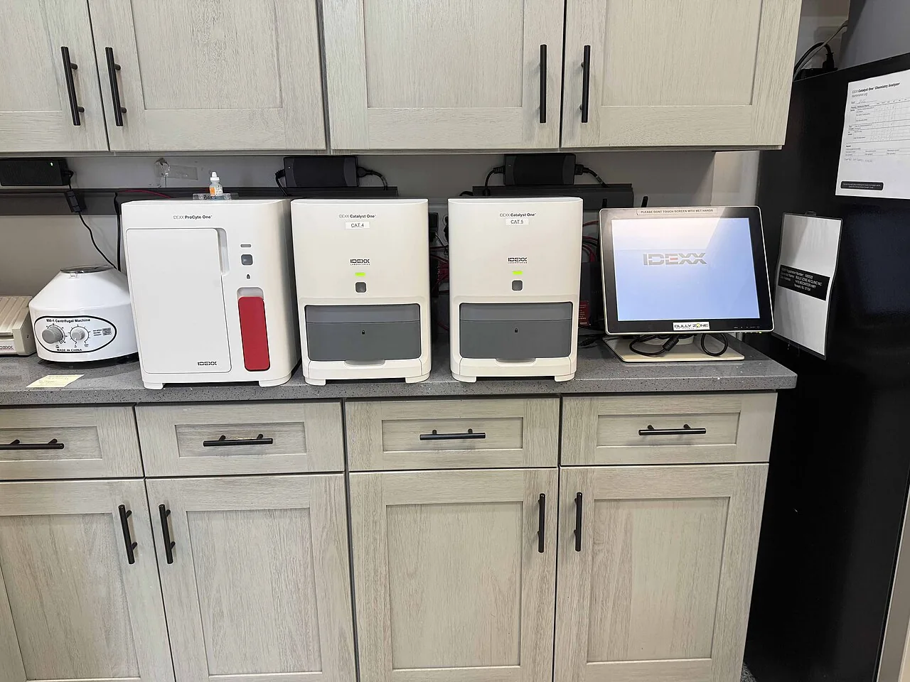

Оборудование клиники
В ВВЦ делают цифровые рентгеновские снимки, проводят УЗИ и эндоскопию. Анализы крови и мочи выполняют в собственной лаборатории.

Цифровой рентген
Рентгеновские снимки помогают оценить положение костей при переломе и после остеосинтеза. В ВВЦ выполняют цифровую рентгенографию костей и контрастные исследования.
Среди ортопедических вмешательств центра — остеосинтез и операции TPLO для стабилизации коленного сустава. Травматология и ортопедия
Рентгенография костейЭндоскопия
Камера эндоскопа передаёт изображение на экран. Врачи ВВЦ используют ветеринарную эндоскопическую систему при малоинвазивных операциях на желудке.
Об эндоскопии в ВВЦ

УЗИ
Датчик передаёт на экран изображение внутренних органов в реальном времени. В ВВЦ на аппарате экспертного класса исследуют органы брюшной и грудной полостей.
Как проходит УЗИСобственная лаборатория
В лаборатории делают общий анализ крови и исследуют мочу. Под микроскопом изучают соскобы, мазки и клеточный материал.
Исследования лаборатории
Новости клиники
Диагностика в центре
Клиника перечисляет три направления инструментальной диагностики: эндоскопию, УЗИ и рентген.
Собственная лаборатория
ВВЦ рассказывает о работе своей лаборатории, где проводят диагностические исследования.
Операции в ВВЦ
Врачи центра выполняют остеосинтез и операции на органах брюшной полости, в том числе малоинвазивные вмешательства на желудке.
Фотографии ВВЦ на Яндекс Картах
Об иллюстрациях и источниках
Фотографии показывают типы оборудования. Это иллюстрации, снятые в других учреждениях. Изображения уменьшены и переведены в WebP. Для каждого изображения действует указанная лицензия.
- УЗ-аппарат — Harrison Keely, CC BY 4.0.
- Рентгеновская установка — Sujalajus, CC BY-SA 3.0.
- Лабораторные анализаторы — Veterinarian Pet Alliance, CC BY 4.0.
- Эндоскопическая стойка — Samir, CC BY 3.0.
- Наконечники эндоскопов на странице «О центре» — Linda Bartlett / National Cancer Institute, Public domain.


Информация об оснащении: официальный сайт ВВЦ и прайс-лист центра.